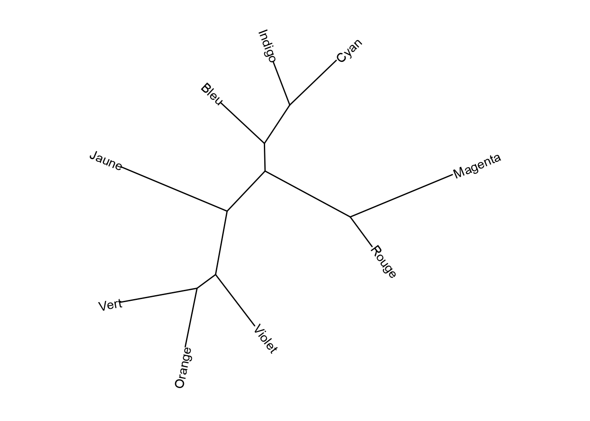
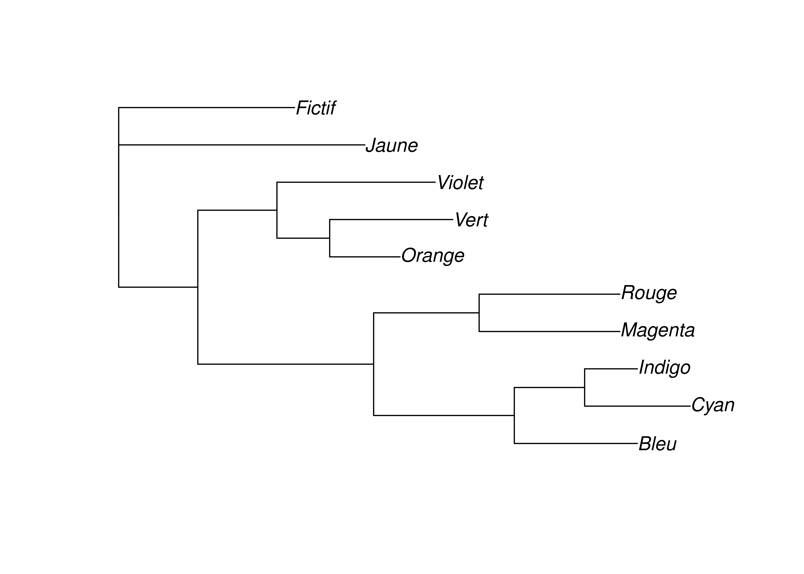
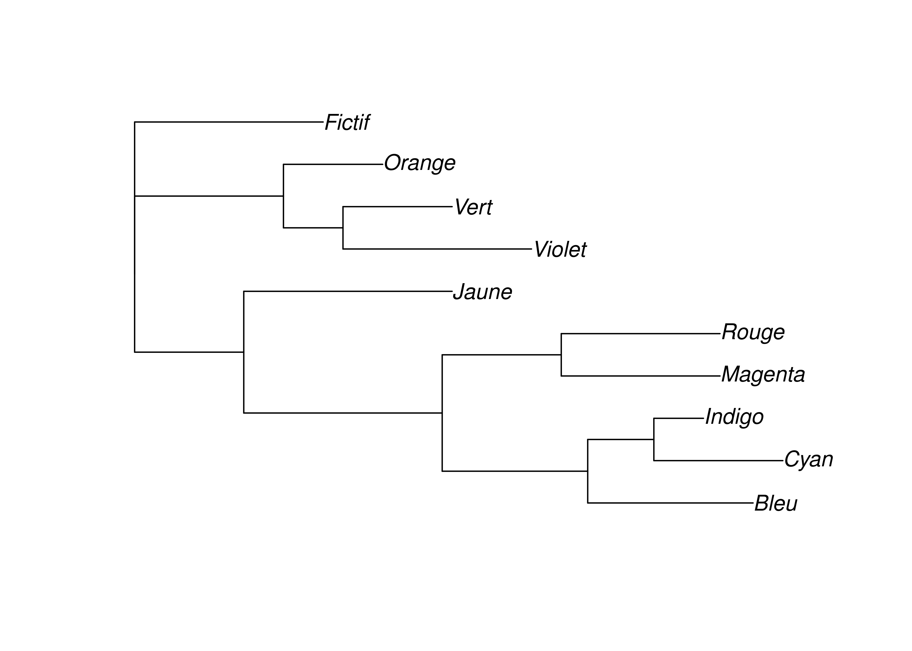
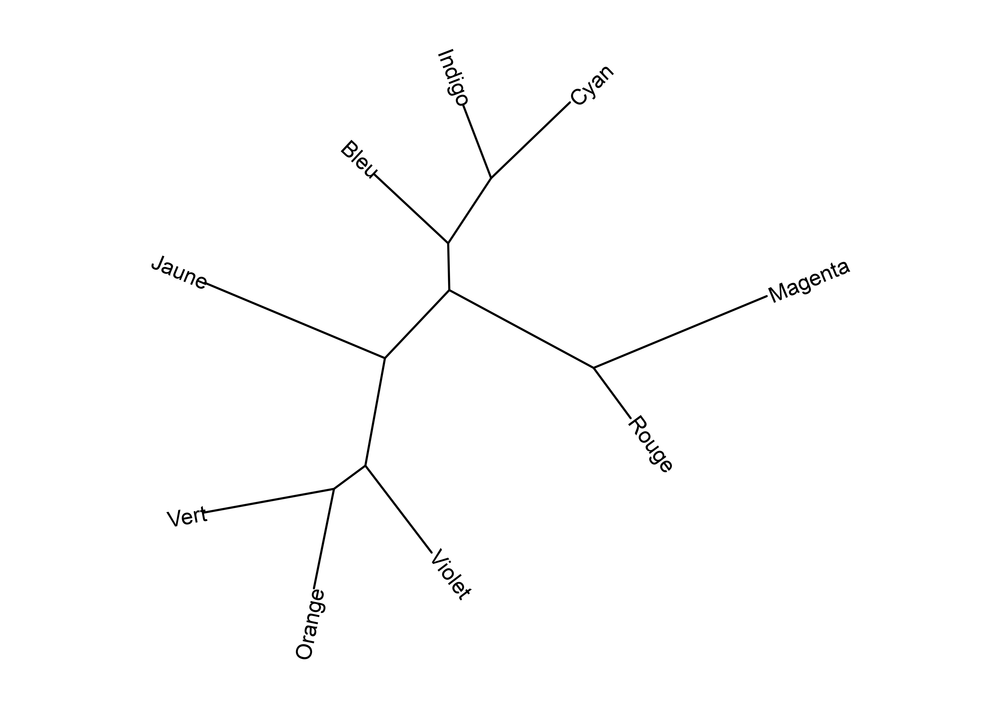

3 Méthodes de parcimonie
Contrairement aux méthodes par distance, les méthodes de parcimonie ne construisent pas un arbre pas à pas mais recherchent le ou les arbre optimaux parmi les arbres possibles. Le critère d’évaluation des arbres est celui de maximum de parcimonie: l’arbre préféré est celui qui suppose le moins de changements. Autrement dit, on suppose qu’un changement partagé s’est a priori produit dans l’ancêtre commun plutôt que de manière indépendante dans des langues différentes. Les méthodes de parcimonie cherchent donc à minimiser les homoplasies ou innovations parallèles.
Les méthodes de parcimonie sont plus complexes que celles par distance mais restent néanmoins beaucoup plus simples que les méthodes probabilistes. Si elles reposent sur peu de suppositions et ont une solide base épistémologique, ces méthodes posent des problèmes statistiques et peuvent donner des résultats faux dans certaines conditions.
Commençons par importer de nouveau la matrice de traits que nous avions sauvegardée précédemment.
3.1 Parcimonie générale
Parmi les différentes variantes de parcimonie, la plus simple autorise tous les changements sans restriction et les traite à égalité sans pondération, orientation, ou ordre. Dans le cas d’une matrice de traits binaires, les changements 0 > 1 et 1 > 0 sont ainsi traités de manière identique, et il n’est pas nécessaire de connaitre l’état ancestral de chaque trait et si un changement constitue une innovation ou une réversion, ce qui implique que le résultat est un arbre non raciné.
Jusqu’à une dizaine de taxons, il est possible d’utiliser l’algorithme Branch and bound qui garantit de trouver la solution optimale.
lx_bab <- bab(lx_phy)
lx_bab4 phylogenetic treesIl est nécessaire de calculer explicitement la longueur des différentes branches. La fonction acctran() permet de calculer la longueur par la méthode de transformation accélérée qui assigne les changements le plus haut possible dans l’arbre et favorise l’interprétation des homoplasies comme des réversions.
lx_bab <- acctran(lx_bab, lx_phy)On peut alors sauvegarder les résultats (arbres avec longueurs de branches) dans un fichier au format Newick.
write.tree(lx_bab, "lx_bab.nwk")Les méthodes de parcimonie retournent typiquement plusieurs arbres également parcimonieux. Il est possible de les visualiser individuellement.
library(ggtree)
ggtree(lx_bab[[1]], layout = "daylight") +
geom_tiplab2() +
xlim(-25, 45) + ylim(-35, 55) +
theme_tree()
Code
ggtree(lx_bab[[2]], layout = "daylight") +
geom_tiplab2() +
xlim(-30, 38) + ylim(-28, 55) +
theme_tree()
Code
ggtree(lx_bab[[3]], layout = "daylight") +
geom_tiplab2() +
xlim(-17, 53) + ylim(-25, 60) +
theme_tree()
Code
ggtree(lx_bab[[4]], layout = "daylight") +
geom_tiplab2() +
xlim(-30, 38) + ylim(-30, 50) +
theme_tree()
Au-delà d’une dizaine de taxons, il est nécessaire d’utiliser une méthode heuristique comme le Parsimony Ratchet. Ici, la méthode retourne un seul et unique arbre qui diffère de ceux obtenus par la méthode précédente.
lx_pratchet <- pratchet(lx_phy)
lx_pratchet <- acctran(lx_pratchet, lx_phy)
write.tree(lx_pratchet, "lx_pratchet.nwk")ggtree(lx_pratchet, layout = "daylight") +
geom_tiplab2() +
xlim(-60, 30) + ylim(-35, 45) +
theme_tree()
Parcimonies de Camin-Sokal et de Dollo